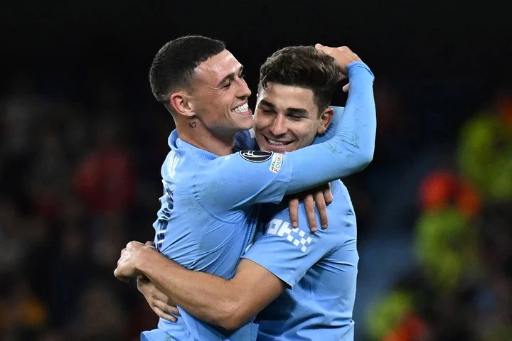
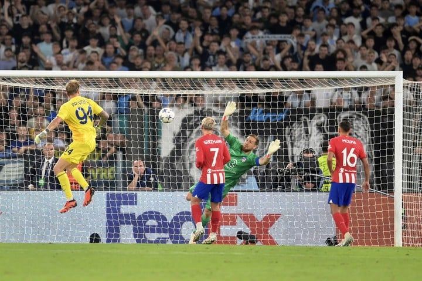

Champions League
los resultados de la primera fecha y lo que se viene
Doblete de Julián Álvarez en el triunfo del Manchester City, show del Barcelona, victoria del PSG, empate del Atlético de Madrid y más.
Este martes inició la etapa de la fase de grupos de la Champions League y varios candidatos a quedarse con el título arrancaron con el pie derecho. Hubo 25 goles, participación argentina y hasta un tanto convertido por un arquero en el último minuto.
¿Por qué el Manchester City no portó el parche de campeón en la Champions?

El Manchester City debutó con victoria 3-1 sobre el Estrella Roja en una nueva edición de la Champions que lo tiene como vigente ganador del certamen. Pese a esto, los Citizens no portaron la insignia de campeón... ¿Cuáles fueron los motivos?
Para poder colocar la cantidad de Orejonas cosechadas en la manga, los clubes deben cumplir una de estas dos pautas: haber ganado la competición en cinco oportunidades o más, o haberlo hecho tres veces de forma consecutiva.
El pasado de delantero del arquero de la Lazio que metió un gol en la Champions League

Ivan Provedel, de cabeza, selló el 1-1 contra el Atlético de Madrid. Jugó de 9 hasta los 15 años y fue el segundo gol de su carrera.